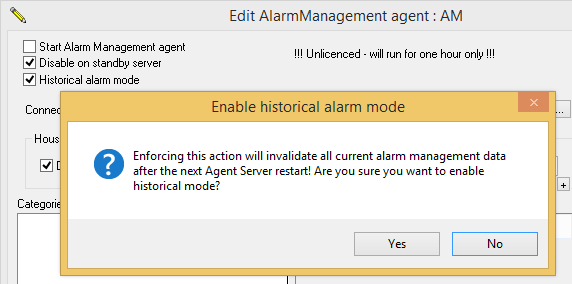

Historical alarm mode allows an UNLICENSED AlarmManagement agent to log your historical alarms, instead of providing the fully fledged AlarmManagement system to be used for one hour.
Note1: Please ensure that this agent name is no more than 27 characters long.
Note2: You can only add ONE AlarmManagement agent.

Specify the location to the SQL database in the Connection field.
Note: If you need to configure the Alarm Management agent from remote computers, it is safer to use SQL authentication (Use a specific user name and password) when creating this connection and NOT Windows authentication (Use Windows NT Integrated Security) unless you are sure that the logged on users at the remote computers have the necessary access rights to this SQL database.  More details:
More details:
Use an existing (or create) a SQL database for your alarm management.
Note1: If you do not have SQL installed then install at least SQL Server 2008 R2 or its Express version.
Note2: If multiple AlarmManagement agents (possibly from different Agent Servers) connect to the SAME database, then ensure that each agent is UNIQUELY named since incidents are logged using the name of its assigned AlarmManagement agent.
Click the ... browse button to the right of this field and use the Data Link Properties dialog to create the required connection string to your SQL Server database.
PLEASE NOTE:You CANNOT connect to an MS Access database because of its known performance issues - please a MS SQL database instead.
Note:Please use a UNC path when referring to this database
instead of a local file path,
if you need to access the logged alarms from mimics on remote clients.
IMPORTANT: You cannot run the AlarmManagement agent in both alarm management mode and this Historical Alarm mode at the same time and therefore after enabling Historical Alarm mode the AlarmManagement reports will not work!
Note1: ONLY If your AlarmManagement agent agent is not licensed by your Adroit license, is the Historical Alarm mode check box displayed.
Note2: If you do not check this checkbox then you can freely use (demo) the fully fledged AlarmManagement system for one hour. However, after enabling this checkbox you no longer have access to the fully fledged AlarmManagement system, unless you uncheck the Historical Alarm mode check box and restart the Agent Server.

By default, this is disabled, which means that you need
to perform the required housekeeping.
Note: You cannot specify an number of days less than 30, since you need some historical records to determine your alarming trends.